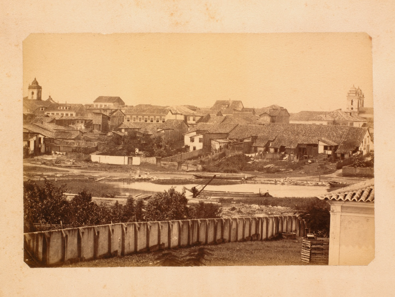

Construído no século XIX, o Canal Campos–Macaé surgiu da necessidade de melhorar o escoamento da produção açucareira do Norte Fluminense, que enfrentava grandes dificuldades logísticas até chegar ao porto do Rio de Janeiro.
Iniciado em 1844 e concluído em 1872, após quase 30 anos de obras, o canal é considerado a segunda maior obra do Brasil Imperial e, à época, o segundo maior canal artificial do mundo.
Apesar de sua grandiosidade, teve uso breve: poucos anos após sua inauguração, foi superado pela chegada da ferrovia, mais rápida e eficiente.
Hoje, o Canal Campos–Macaé permanece como um importante patrimônio histórico, atravessando a paisagem e preservando a memória de quem o construiu.